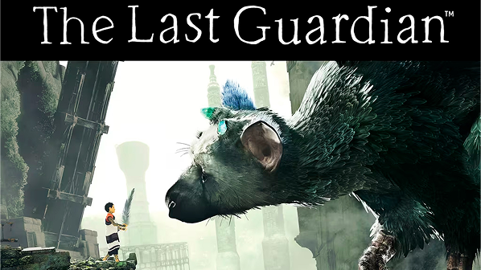

The Last Guardian

The Last Guardian es una aventura centrada en la cooperación entre un niño y Trico
(una criatura gigante). El jugador resuelve acertijos y explora ruinas antiguas
mientras construye un vínculo emocional con su compañero.
Destaca por su narrativa ambiental y su enfoque en la relación entre personajes.
Datos
- Género: Aventura y puzzles
- Tipo de juego: Un jugador
- Enfoque: Relación emocional con compañero IA
- Mecánicas: Exploración y resolución de acertijos
- Elemento distintivo: Criatura gigante aliada
- Experiencia: Narrativa ambiental
Curiosidades
- Lanzamiento: 2016
- Estudio creador: Japan Studio
- Director creativo: Fumito Ueda
- Tardó casi 9 años en desarrollarse
- Es considerado sucesor espiritual de Shadow of the Colossus
- La criatura tiene comportamientos de IA inspirados en animales reales